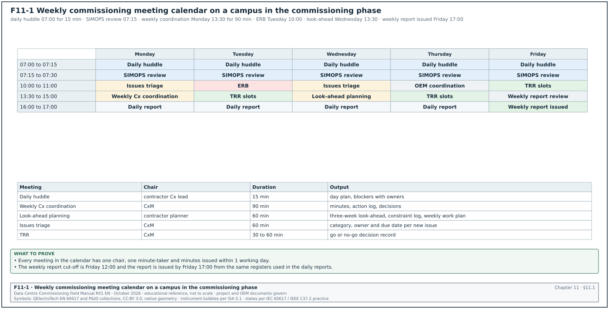
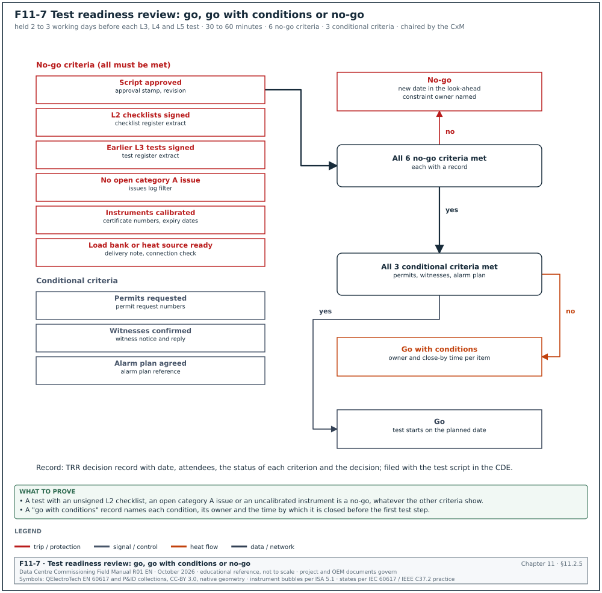
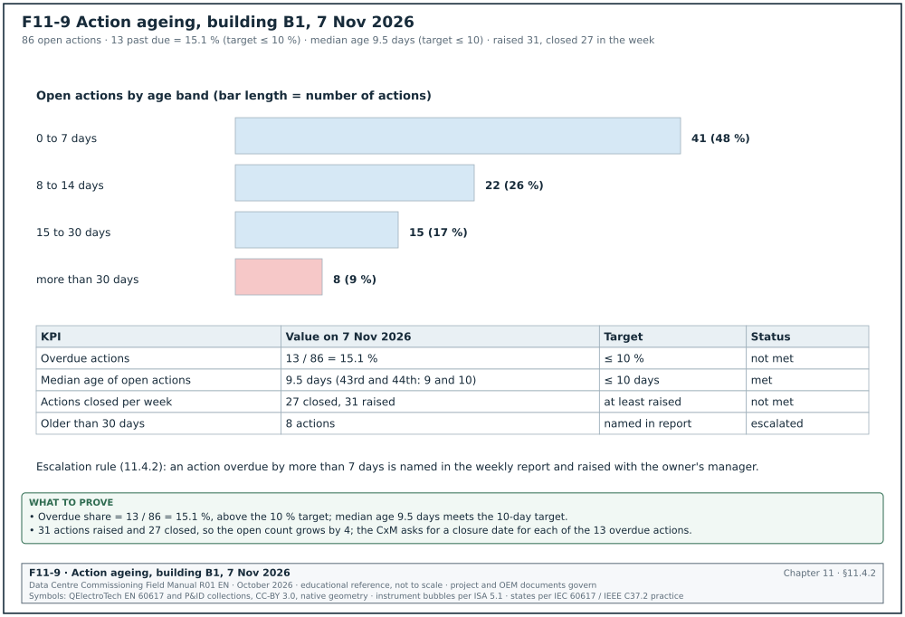
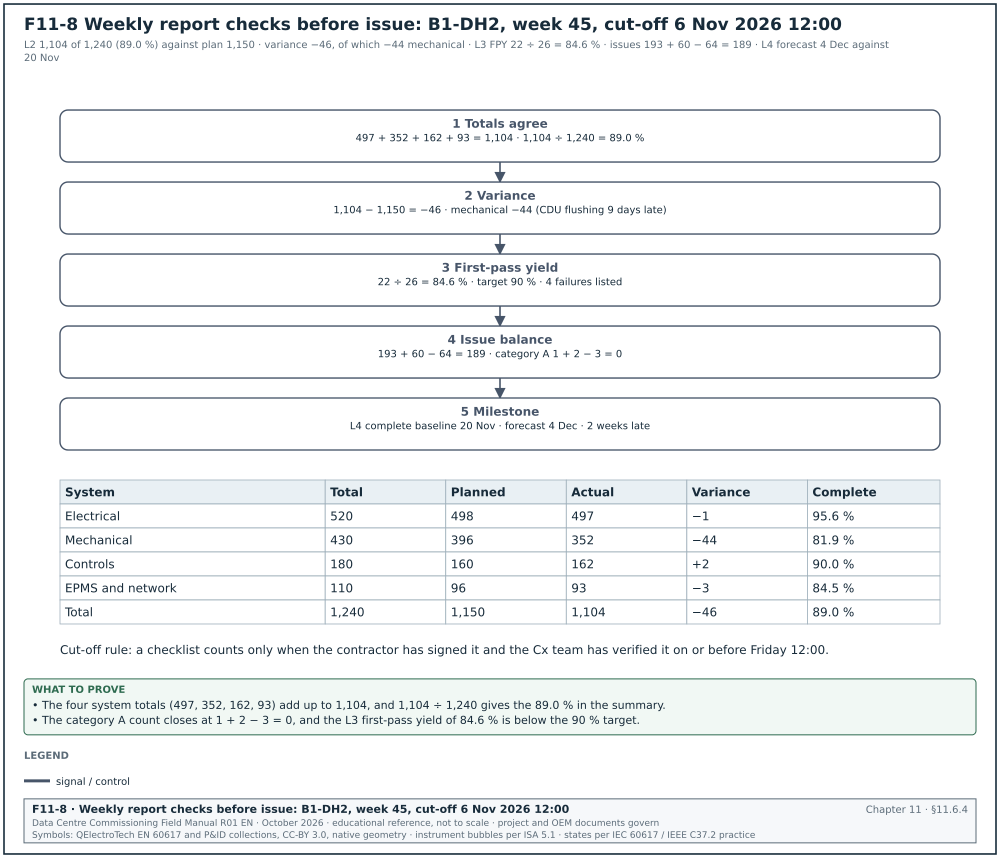
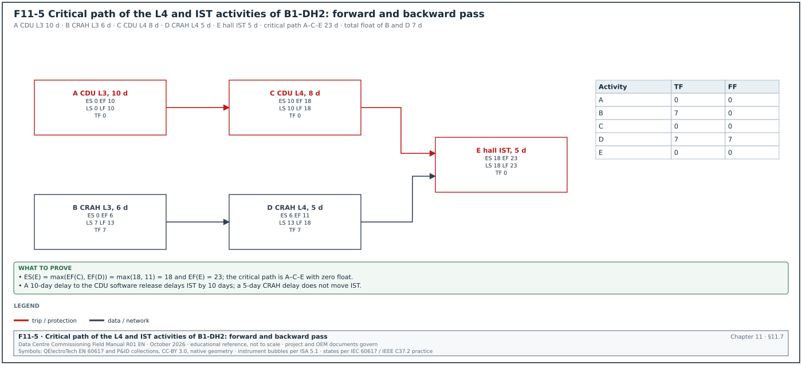
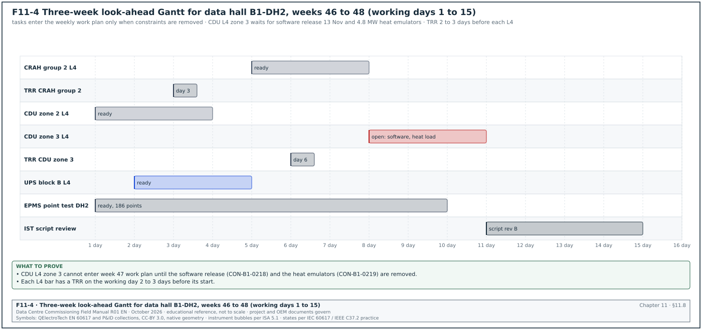
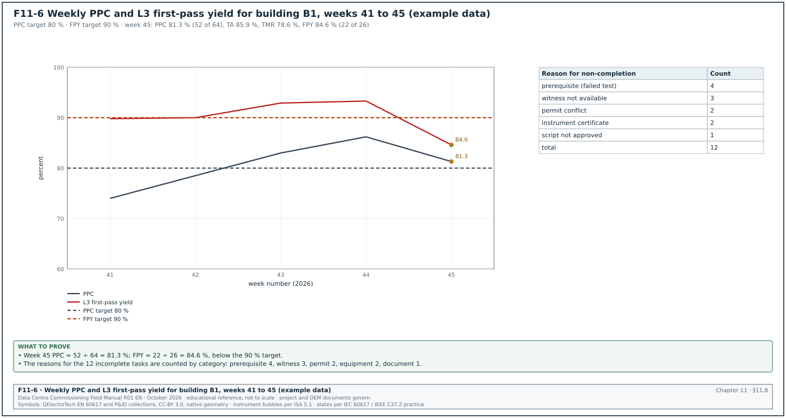
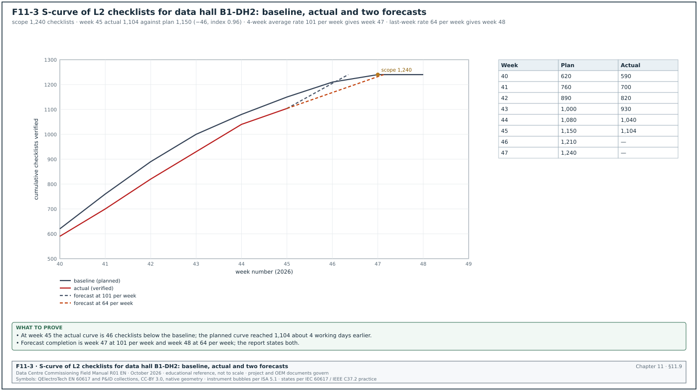
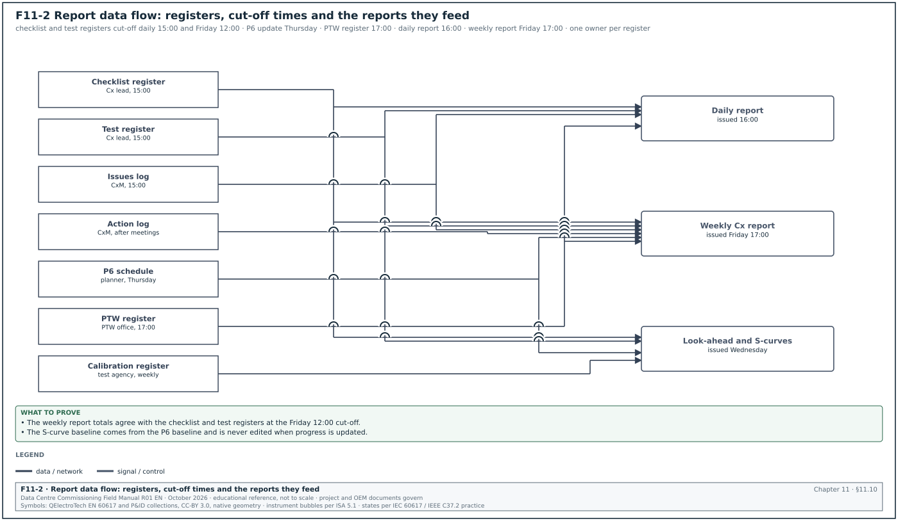

11.0Scope of this chapter
This chapter describes the meetings, reports and schedules that a commissioning manager (CxM) runs or takes part in on a hyperscale data-centre campus. It gives the purpose, chair, attendees, agenda, inputs and outputs of each meeting, and the fields of the minutes and the action log. It also gives the content of the daily and weekly reports, the commissioning activities in the Primavera P6 schedule, the three-week look-ahead and the S-curves for checklists and tests. Section 09.8.2 gives the issue and punch-list categories used in the reports. Chapter 10 gives the energisation readiness board (ERB). Chapter 30 gives the commissioning data model and dashboards.
- Meeting set. Commissioning kick-off, weekly commissioning coordination, daily huddle, look-ahead planning, test readiness review (TRR), ERB, issues triage, design review and original equipment manufacturer (OEM) coordination.
- Minutes and action log. The minutes template, the rules for writing actions, the action log fields, ageing and closure.
- Daily report. Content, fields, sources and a filled example.
- Weekly commissioning report. Sections, data sources, the calculation of each number and a filled example for one data hall.
- Schedule. Commissioning activities in the P6 schedule, work breakdown structure (WBS), activity codes, logic, float, constraints, calendars and the schedule quality checks of the Defense Contract Management Agency (DCMA) 14-point assessment.
- Three-week look-ahead. Format, constraint log, weekly work plan, percent plan complete (PPC), tasks anticipated (TA) and tasks made ready (TMR) from the Last Planner System.
- S-curves. Planned and actual curves for checklists and tests, forecast and schedule performance.
- Worked examples. Minutes extract, action ageing, daily report, weekly report for data hall B1-DH2, float calculation, look-ahead PPC and S-curve forecast.
Documents and standards used: ASHRAE Guideline 0-2019, ASHRAE Standard 202-2024, BSRIA BG 8 (Model Commissioning Plan) and CIBSE Commissioning Code M. The chapter also uses PMI A Guide to the Project Management Body of Knowledge (PMBOK Guide, 7th edition) and PMI Practice Standard for Scheduling (3rd edition). It also uses the DCMA 14-point assessment as described in the Deltek Acumen help and the US Government Accountability Office (GAO) Schedule Assessment Guide. Further sources are the Last Planner System as described by Ballard (2000) and later International Group for Lean Construction (IGLC) papers, Oracle Primavera P6 documentation and the MSC-1 case ledger.
11.1The meeting set and the weekly calendar


11.1.1Why the commissioning team needs a defined meeting set
On a campus of 4 buildings and 12 data halls, the commissioning team works with many parties. They are the owner, the designer, the general contractor (GC), more than 30 subcontractors, more than 20 OEMs, the operations team and the authorities. Without a fixed meeting set, decisions are made in informal conversations and are not recorded. The meeting set gives each decision type one forum, one chair and one record. ASHRAE Guideline 0-2019 lists commissioning meetings and progress reporting as part of the commissioning process in the construction phase (confirm the clause list against the construction-phase section of ASHRAE Guideline 0-2019 and of ASHRAE Standard 202-2024). BSRIA BG 8 and CIBSE Code M give the same structure for UK practice.
The rule for every meeting is the same.
- One purpose. Each meeting has one written purpose. Items that belong to another meeting are moved there.
- Fixed inputs. The inputs are issued at least 24 hours before the meeting (for the daily huddle, at the start of the shift).
- Fixed outputs. Each meeting produces minutes or a decision record, and new actions go into the single project action log.
- Time box. Each meeting has a fixed duration and starts on time.
- Named chair and minute-taker. The chair runs the agenda; a different person writes the minutes.
11.1.2Overview of the meeting set
| Meeting | Chair | Frequency and duration | Main attendees | Output |
|---|---|---|---|---|
| Commissioning kick-off | CxM | Once per phase or building, 3 hours | Owner, designer, GC, mechanical, electrical and plumbing (MEP) subcontractors, controls, OEM leads, operations | Agreed Cx plan, roles, schedule logic, document set |
| Weekly commissioning coordination | CxM | Weekly, 90 minutes | Contractor Cx lead, package managers, controls, electrical power monitoring system (EPMS) contractor, test agency, owner, operations | Minutes, action log update, decisions |
| Daily huddle | Contractor Cx lead | Daily 07:00, 15 minutes | Test teams, permit-to-work (PTW) coordinator, CxM or deputy | Day plan, safety points, blockers |
| Look-ahead planning | Contractor planner | Weekly, 60 minutes | Package managers, CxM, OEM coordinators | Three-week look-ahead, constraint log, weekly work plan |
| Test readiness review (TRR) | CxM | Before each L3, L4 and L5 test, 30 to 60 minutes | Test lead, contractor, OEM, owner witness, operations | Go or no-go decision record |
| Energisation readiness board (ERB) | Owner electrical lead | Weekly in energisation phase, 60 minutes | CxM, electrical contractor, senior authorised person (SAP), Ahli K3 Listrik (electrical safety expert) | ERB decision record (chapter 10) |
| Issues triage | CxM | Twice weekly, 60 minutes | Contractor quality, package managers, designer as needed | Issue category, owner and due date for each new issue |
| Design review | CxM | Per design stage, 2 to 4 hours | Designer, owner engineering, operations | Cx design review comment log |
| OEM coordination | CxM or contractor Cx lead | Weekly per major OEM during factory acceptance test (FAT) and start-up, 45 minutes | OEM project manager, field engineer, contractor | OEM schedule, FAT and start-up dates, open OEM issues |
11.1.3The weekly calendar
The calendar below is the standard week used on a campus in the commissioning phase. Fixed slots stop the meetings from colliding and keep the morning free for site work. Figure F11-1 shows the same calendar as a matrix.
| Time | Monday | Tuesday | Wednesday | Thursday | Friday |
|---|---|---|---|---|---|
| 07:00 to 07:15 | Daily huddle | Daily huddle | Daily huddle | Daily huddle | Daily huddle |
| 07:15 to 07:30 | Simultaneous operations (SIMOPS) review (chapter 10) | SIMOPS review | SIMOPS review | SIMOPS review | SIMOPS review |
| 10:00 to 11:00 | Issues triage | ERB (energisation phase) | Issues triage | OEM coordination | TRR slots |
| 13:30 to 15:00 | Weekly Cx coordination | TRR slots | Look-ahead planning | TRR slots | Weekly report review |
| 16:00 | Daily report issued | Daily report issued | Daily report issued | Daily report issued | Weekly report issued by 17:00 |
Common errors:
- Meeting overrun. The weekly coordination meeting turns into an issue-by-issue review and lasts 3 hours. The chair moves issue detail to triage.
- Duplicate action logs. Each package keeps its own list. The CxM keeps one log with a package field.
- Minutes issued late. Minutes issued after 3 days arrive after many of their actions are due. The target is minutes issued within 1 working day.
11.2Each meeting in detail
11.2.1Commissioning kick-off meeting
Purpose: To agree the commissioning plan, the roles, the levels L1 to L5, the document set and the schedule logic before commissioning work starts in a building.
Trigger: Contract award of the main MEP packages, or the start of construction of a new building on the campus.
Owner: The CxM chairs; the owner's project manager attends as the decision maker.
Inputs: Draft commissioning plan, owner's project requirements (OPR), basis of design (BOD), draft Cx schedule, list of systems and equipment, draft checklist and script templates.
Steps:
- Introductions and roles. Each party names its commissioning lead, deputy and authorised witnesses. The roles go into the contact list.
- Scope of commissioning. The CxM presents the system list with the commissioning level per system (for example, the 20 kV system L1 to L5, the lighting L1 to L3).
- Process and levels. The CxM explains the levels: L1 factory acceptance, L2 installation checks, L3 start-up and pre-functional, L4 functional performance, L5 integrated systems testing.
- Documents. The CxM lists the documents and their templates: checklists, scripts, issues log, test reports, systems manual inputs.
- Schedule logic. The planner presents the Cx activities and the dependencies on construction and energisation.
- Issues process. The CxM explains the issue categories (section 09.8.2), the triage meeting and the closure evidence.
- Witnessing. The parties agree the witness notice period (contract governs; typical 48 hours for L3 tests and 10 working days for L4 and L5 tests, section 03.5.1) and the rule for missed witnesses.
- Safety and permits. The PTW coordinator explains the permit system for commissioning work (chapter 10).
- Communication. The meeting set, the reports and the common data environment (CDE) folders are agreed (chapter 04).
- Actions and next steps. The minute-taker reads back the actions.
Records: Kick-off minutes, attendance sheet, agreed Cx plan revision.
11.2.2Weekly commissioning coordination meeting
Purpose: To review progress against the schedule, decide on blockers that the daily huddle could not resolve, and update the action log.
Owner: CxM.
Inputs: Draft weekly report figures (checklists, tests, issues), action log extract, three-week look-ahead, issues summary.
Steps:
- Safety. Incidents and near misses from the week, and any permit audit findings.
- Action log review. Only actions due this week and overdue actions are read. Each owner gives a status in one sentence.
- Progress. The contractor Cx lead presents planned and actual counts for L2 checklists, L3 and L4 tests, and the S-curve per building.
- Look-ahead. The planner presents the next three weeks with the open constraints.
- Issues summary. The CxM presents open issues by category and age. Category A issues older than their limit are named.
- Decisions needed. The chair states each decision needed. The options and the decision are minuted.
- OEM and FAT status. Upcoming factory acceptance tests and OEM attendance.
- Any other business. Only items notified 24 hours before.
- Read-back of new actions. The minute-taker reads each new action with owner and due date.
Acceptance: Every new action has one owner (a named person), a due date and a closure evidence statement.
Records: Minutes, updated action log.
11.2.3Daily huddle
Purpose: To confirm the day's commissioning work, the permits it needs, and the blockers that need help today.
Owner: Contractor Cx lead.
Steps:
- Safety point. One safety item for the day, for example a new live room or a confined-space entry.
- Yesterday. Each test team states what was completed against the plan, in numbers.
- Today. Each team states the tests planned, the permits required and the witnesses needed.
- Blockers. Each blocker gets one owner who reports back by 12:00.
- SIMOPS link. Tests with an isolation boundary are passed to the 07:15 SIMOPS review.
The team stands during the huddle. The huddle lasts 15 minutes and uses a whiteboard or a screen with the day's test list. Blockers that need a decision above the contractor Cx lead go to the CxM the same morning.
11.2.4Look-ahead planning meeting
Purpose: To produce the three-week look-ahead, identify constraints for each activity and agree the weekly work plan for the next week. Section 11.8 gives the method.
Owner: Contractor planner, with the CxM.
Inputs: P6 schedule update, constraint log, last week's weekly work plan with completion status, reasons for non-completion.
Steps:
- Review last week. Calculate the PPC and list the reasons for each incomplete task.
- Move the window forward. Drop the completed week and add week 3 from the P6 schedule.
- Screen constraints. For each activity in weeks 2 and 3, check the constraints: design information, materials, prerequisite work, permits, people, equipment, test documents and witnesses.
- Assign constraint owners. Each constraint gets an owner and a date by which it must be removed.
- Commit next week. Only activities with no open constraint are placed in the weekly work plan.
Records: Look-ahead file, constraint log, weekly work plan.
11.2.5Test readiness review
Purpose: To decide whether a test at level L3, L4 or L5 can start on the planned date. Figure F11-7 shows the decision with the six no-go criteria and the three conditional criteria.


Trigger: A test in the weekly work plan, 2 to 3 working days before its start.
Owner: CxM.
Inputs: Approved test script, prerequisite checklist status, instrument list with calibration certificates, permits and isolations needed, open issues on the system, witness list.
Steps:
- Script. Confirm that the script revision is approved and issued to all attendees.
- Prerequisites. Confirm that the L2 checklists and the earlier L3 tests of the system are signed.
- Open issues. Confirm that no category A issue is open on the system, and list category B issues accepted for the test.
- Instruments. Confirm that each instrument is on site with a valid calibration certificate (section 07.8.1 gives the measuring and test equipment register).
- Load and resources. Confirm load banks, heat emulators, fuel, chilled water and people.
- Permits and boundaries. Confirm the PTW requests and the isolation boundary (chapter 10).
- Operations and alarms. Confirm that the operations team and the alarm plan know the test window.
- Decide. The CxM decides go, go with conditions, or no-go with a new date, and writes the decision in the TRR decision record.
| TRR criterion | Evidence | Status if missing |
|---|---|---|
| Script approved | Script with approval stamp, revision number | No-go |
| L2 checklists signed | Checklist register extract | No-go |
| Earlier L3 tests signed | Test register extract | No-go |
| No open category A issue | Issues log filter | No-go |
| Instruments calibrated | Instrument list with certificate numbers and expiry dates | No-go |
| Load bank or heat source ready | Rental delivery note, connection check | No-go |
| Permits requested | Permit request numbers | Go with condition |
| Witnesses confirmed | Witness notice and reply | Go with condition |
| Alarm plan agreed | Alarm plan reference | Go with condition |
Records: TRR decision record with date, attendees, criteria status and the decision.
11.2.6Energisation readiness board
The ERB is described in chapter 10 (10.5.2). In the meeting set it sits on Tuesday at 10:00 during the energisation phase. Its decision record is an input to the look-ahead because a refused scope moves every test that depends on it.
11.2.7Issues triage meeting
Purpose: To check each new issue for completeness, assign the category, owner and due date, and review the ageing of open issues.
Owner: CxM.
Steps:
- New issues. Read each issue raised since the last triage. Reject duplicates and issues without a location or a tag.
- Categorise. Assign category A, B or C (section 09.8.2) with the reason.
- Assign. Assign one owner and a due date within the ageing limit. In the MSC-1 worked example the limits are 1 day for A, 7 days for B and 30 days for C.
- Review overdue issues. Read each overdue issue and agree a recovery date or an escalation.
- Review issues for closure. Check the closure evidence of issues proposed for closure and close each accepted issue in the issues log.
Records: Issues log update, triage minutes listing category changes and escalations.
11.2.8Design review meeting
Purpose: To review the design at each stage for commissionability, operability and maintainability against the OPR, and to agree the responses to Cx design review comments.
Owner: CxM.
Steps:
- Before the meeting. The CxM issues the design review comment log with one row per comment: drawing or document, clause, comment, recommended change, category.
- Walk the comments. The designer gives a response for each comment: accept, reject with a reason, or clarify.
- Agree the close-out. Accepted comments get a target revision; rejected comments that affect the OPR go to the owner for a decision.
- Record. The comment log is updated and stored in the CDE.
11.2.9OEM coordination meeting
Purpose: To align the OEM's factory acceptance test (FAT), delivery, installation supervision, start-up and training with the Cx schedule.
Owner: CxM or contractor Cx lead.
Steps:
- FAT dates and witnesses. Confirm the FAT date, the FAT procedure revision and the witness travel.
- Delivery and storage. Confirm delivery dates and storage conditions and record them in the OEM schedule.
- Start-up. Confirm the OEM start-up engineer, the prerequisite list (power, cooling, network) and the start-up checklist.
- OEM issues. Review open issues assigned to the OEM.
- Training. Confirm the training plan dates (chapter 12).
11.3Minutes: template and rules
11.3.1Minutes template
| Field | Type | Example value |
|---|---|---|
| Meeting title and number | text | Weekly Cx coordination B1, meeting 34 |
| Date, time, location | date-time, text | 3 Nov 2026, 13:30 to 15:00, site office room 2 and video link |
| Chair | name and company | CxM, owner Cx team |
| Minute-taker | name | Cx coordinator |
| Attendees and absentees | table | 14 present, 2 absent with apologies |
| Previous minutes | accepted or corrected | accepted with one correction to item 33.4 |
| Item number | text, meeting.item | 34.3 |
| Item type | pick list: information, decision, action | Decision |
| Item text | text | The L4 test of computer room air handler (CRAH) group 2 moves to 12 Nov because the building management system (BMS) graphics are not loaded. |
| Action owner | name | Controls lead |
| Due date | date | 7 Nov 2026 |
| Closure evidence | text | BMS graphics screenshots for CRAH group 2 in the CDE |
| Distribution | list | all attendees, owner project manager, data-centre operations (DCOps) lead |
11.3.2Rules for writing minutes
- Record decisions and actions. The minutes record what was decided and who will do what by when. They do not record the discussion.
- One subject per item. Each item has its own number so that it can be referred to later.
- Name a person. An action owner is a named person, never a company or "all".
- State the evidence. Each action says what closes it, for example a signed checklist number or a document in the CDE.
- Use the tag. Items about equipment use the asset tag (for example B1-DH2-CRAH-07).
- Issue within 1 working day. Minutes are issued by the end of the next working day. Corrections are raised at the next meeting.
Worked example: Minutes extract, weekly Cx coordination B1, meeting 34, 3 Nov 2026.
| Item | Type | Text | Owner | Due |
|---|---|---|---|---|
| 34.1 | Information | One near miss on 30 Oct: a scissor lift entered the live medium-voltage (MV) room corridor. The PTW office added a barrier. | PTW coordinator | closed |
| 34.2 | Action | Action 31.6 (relay test report P07) is 5 days overdue. The electrical contractor issues the signed report. | Electrical package manager | 5 Nov 2026 |
| 34.3 | Decision | The L4 test of CRAH group 2 in B1-DH2 moves from 6 Nov to 12 Nov. Reason: BMS graphics not loaded. | CxM | recorded |
| 34.4 | Action | Load BMS graphics for CRAH group 2 and send screenshots. | Controls lead | 7 Nov 2026 |
| 34.5 | Information | L2 checklists for B1-DH2: 1,104 of 1,240 signed (89.0 %), plan 1,150 (92.7 %). | Contractor Cx lead | none |
| 34.6 | Action | Provide a recovery plan for the 46 checklists behind plan. | Contractor Cx lead | 6 Nov 2026 |
11.4The action log
11.4.1Action log fields
| Field | Type | Example value |
|---|---|---|
| Action ID | text, unique | ACT-B1-0341 |
| Source | pick list and number | Weekly Cx coordination 34.4 |
| Date raised | date | 3 Nov 2026 |
| Building, system, tag | pick list and text | B1, BMS, B1-DH2-CRAH-07 to 12 |
| Description | text, starts with a verb | Load BMS graphics for CRAH group 2 |
| Owner | named person | Controls lead |
| Company | pick list | Controls subcontractor |
| Due date | date | 7 Nov 2026 |
| Closure evidence required | text | Screenshots of 6 CRAH graphics in the CDE folder |
| Status | pick list | open, in progress, closed, cancelled |
| Date closed | date | 6 Nov 2026 |
| Closed by | named person | CxM |
| Age (days) | calculated | date closed or today minus date raised |
| Overdue flag | calculated | today greater than due date and status not closed |
11.4.2Action closure and ageing
Figure F11-9 shows the action ageing of building B1 on 7 Nov 2026 by age band, with the key performance indicator (KPI) values against their targets.


- Closure by evidence. An action is closed only by the person who raised it, or by the chair, after seeing the closure evidence.
- No due-date changes without a record. A changed due date is recorded with the reason and the meeting item that approved it. The original date is kept.
- Ageing bands. Open actions are reported in bands: 0 to 7 days, 8 to 14 days, 15 to 30 days, more than 30 days.
- Escalation. An action overdue by more than 7 days is named in the weekly report and raised with the owner's manager.
| KPI | Definition | Target |
|---|---|---|
| Overdue actions | open actions past due ÷ open actions | ≤ 10 % |
| Median age of open actions | median of age in days | ≤ 10 days |
| Actions closed per week | count | equal to or above the number raised |
| Due-date changes | changed due dates ÷ actions closed in the period | ≤ 15 % |
Worked example: Action ageing on 7 Nov 2026 for building B1. The log has 86 open actions. By age band: 41 actions in 0 to 7 days, 22 in 8 to 14 days, 15 in 15 to 30 days and 8 above 30 days. Of the 86, 13 are past due, so the overdue share is 13 ÷ 86 = 15.1 %, which is above the 10 % target. The median age is the age of the 43rd and 44th actions in ascending order. Both fall in the 8 to 14 day band at 9 and 10 days, so the median is 9.5 days, which meets the target. In the week, 31 actions were raised and 27 closed, so the open count grows by 4. The weekly report names the 8 actions older than 30 days and their owners. The CxM asks for a closure date for each of the 13 overdue actions at the next coordination meeting.
11.5The daily report
11.5.1Purpose and content
The daily report tells the owner and the contractor what commissioning work was done that day, what failed, what is blocked and what is planned for tomorrow. It is issued by 16:00 (or at the end of the shift) so that the next day's huddle starts from the same numbers.
| Section | Content | Source |
|---|---|---|
| Header | Date, building, shift, author, weather if outdoor work | Report template |
| Safety | Incidents, near misses, permit audit findings | PTW register, safety log |
| Manpower | Cx engineers, test technicians and OEM start-up engineers on site by company | Gate access and timesheets |
| Work completed | L2 checklists signed, L3 and L4 tests passed, failed and retests, by system | Checklist and test registers |
| Tests witnessed | Test, witness names, result | Test register |
| Issues | Issues raised, closed and open by category for the day | Issues log |
| Blockers | Blockers with owner and target date | Huddle notes |
| Energisations and switching | Energisation certificates and switching programmes completed | Chapter 10 records |
| Plan for tomorrow | Tests planned, permits and witnesses needed | Weekly work plan |
| Photos | Photos of failures and completed major installations, with tags | CDE photo folder |
11.5.2Daily report fields
| Field | Type | Example value |
|---|---|---|
| Report number | text | DR-B1-2026-11-05 |
| Date | date | 5 Nov 2026 |
| Building and halls | pick list | B1, DH2 and DH3 |
| Author | name | Contractor Cx lead |
| Cx personnel on site | number by company | 38 (contractor 22, OEM 9, CxA 7) |
| L2 checklists signed today | number by system | 42 (electrical 18, mechanical 15, controls 9) |
| L3 tests passed, failed | numbers | 11 passed, 2 failed |
| L4 tests passed, failed | numbers | 1 passed, 0 failed |
| Issues raised, closed | numbers by category | raised A 0, B 6, C 9; closed B 4, C 12 |
| Blockers | table | 3 |
| Tomorrow's tests | table | 14 tests |
Worked example: Daily report DR-B1-2026-11-05 for building B1. Thirty-eight commissioning personnel worked the day shift. The teams signed 42 L2 checklists against a plan of 45 (93 %). Of 13 L3 tests started, 11 passed and 2 failed. The L3 start-up of CRAH B1-DH2-CRAH-09 failed on fan speed feedback (the BMS reads 0 % at 60 % command). The L3 test of chilled-water (CHW) pump B1-CHW-P-03 failed on vibration at 7.4 mm/s against a limit of 4.5 mm/s. The limit is a project specification value based on the zone boundaries of ISO 10816-3, which ISO 20816-3:2022 now replaces. Both failures are raised as category B issues ISS-B1-0912 and ISS-B1-0913. One L4 test, the uninterruptible power supply (UPS) B1-DH2-UPS-A1 transfer test, passed with the owner witness present. Three blockers are listed. They are the BMS graphics for CRAH group 2 (owner: controls lead, 7 Nov), the missing calibration certificate of the power quality analyser (owner: test agency, 6 Nov) and a permit conflict in the level 2 riser (owner: PTW coordinator, 6 Nov). Tomorrow has 14 tests planned and needs 2 owner witnesses.
11.6The weekly commissioning report
11.6.1Purpose and readers
The weekly commissioning report is the formal progress report of the commissioning process to the owner. ASHRAE Guideline 0-2019 includes progress reports and the issues log among the construction-phase commissioning documents (confirm the clause references against the construction-phase section of ASHRAE Guideline 0-2019). On a hyperscale campus the report has three readers with different needs. The owner's project director reads the one-page summary, the package managers read their sections, and the operations team reads the readiness section.
11.6.2Sections of the weekly report
| No. | Section | Content | Data source |
|---|---|---|---|
| 1 | Summary | Five lines: overall status, schedule variance, top 3 risks, decisions needed, next week's milestones | All sections |
| 2 | Safety | Incidents, near misses, permit audits, electrical incidents | PTW register, safety log |
| 3 | Milestones | Planned and forecast dates of energisations, L4 completion, integrated systems test (IST) and ready for service (RFS) per hall | P6 schedule |
| 4 | L2 checklists | Planned, actual and cumulative counts per system; S-curve | Checklist register |
| 5 | L3 and L4 tests | Planned, passed, failed, retest; first-pass yield | Test register |
| 6 | L5 IST readiness | IST prerequisites status | IST readiness tracker |
| 7 | Issues | Open by category and age, raised and closed in the week, top 10 issues | Issues log |
| 8 | Actions | Open, overdue, ageing bands | Action log |
| 9 | Look-ahead | Next three weeks with constraints | Look-ahead file |
| 10 | Documents | Scripts approved, test reports issued, O&M and handover documents status | Document register |
| 11 | Risks | Risk register extract for Cx | Risk register |
| 12 | Appendix | Detailed tables per system | Registers |
11.6.3Calculation rules for the numbers in the report
- Planned to date. The count of items whose baseline finish date is on or before the report cut-off date (Friday 12:00).
- Actual to date. The count of items signed on or before the cut-off date. A checklist counts only when it is signed by the contractor and verified by the Cx team.
- Percent complete. Actual to date ÷ total scope × 100.
- Variance. Actual to date − planned to date. A negative value means behind plan.
- First-pass yield (FPY). Tests passed at the first attempt ÷ tests attempted for the first time in the period. In the MSC-1 worked example the target is 90 % first-pass yield.
- Issue age. Cut-off date − date raised, for open issues.
- Forecast. Based on the average weekly rate of the last 4 weeks (11.9.2).
11.6.4Worked example: weekly commissioning report for data hall B1-DH2
Worked example: Weekly Cx report, week 45 (cut-off Friday 6 Nov 2026, 12:00), building B1, data hall B1-DH2. In the MSC-1 worked example a data hall has 12 MW of information technology (IT) load and 100 racks. It has 8 electrical blocks, 16 coolant distribution units (CDUs) of 1 MW and a liquid-cooled share of 9.6 MW. Figure F11-8 shows the five checks that the CxM runs on these numbers before the report is issued.


Summary. Data hall B1-DH2 is 2 weeks behind the L4 baseline on the mechanical scope and on plan for electrical. L2 checklists are 89.0 % complete against a plan of 92.7 %. First-pass yield for L3 tests in the week is 84.6 %, below the 90 % target. The top risk is the coolant distribution unit (CDU) controller software release that blocks 6 L4 tests. One decision is needed: the owner's acceptance of the CDU software release date of 13 Nov.
| System | Total L2 checklists | Planned to date | Actual to date | Variance | Percent complete |
|---|---|---|---|---|---|
| Electrical (blocks, UPS, busway, remote power panels (RPP)) | 520 | 498 | 497 | −1 | 95.6 % |
| Mechanical (CRAH, CDU, pipework, pumps) | 430 | 396 | 352 | −44 | 81.9 % |
| Controls (BMS, CDU controls) | 180 | 160 | 162 | +2 | 90.0 % |
| EPMS and network | 110 | 96 | 93 | −3 | 84.5 % |
| Total | 1,240 | 1,150 | 1,104 | −46 | 89.0 % |
| Test level | Scope | Planned to date | Passed to date | First attempts this week | Passed first time this week | FPY this week |
|---|---|---|---|---|---|---|
| L3 start-up and pre-functional | 310 | 240 | 226 | 26 | 22 | 84.6 % |
| L4 functional | 96 | 28 | 19 | 6 | 6 | 100 % |
| L5 IST | 12 scenarios | 0 | 0 | 0 | 0 | not started |
| Issues | Category A | Category B | Category C | Total |
|---|---|---|---|---|
| Open at start of week | 1 | 58 | 134 | 193 |
| Raised in week | 2 | 21 | 37 | 60 |
| Closed in week | 3 | 17 | 44 | 64 |
| Open at cut-off | 0 | 62 | 127 | 189 |
| Open above age limit (1, 7, 30 days) | 0 | 14 | 9 | 23 |
- Totals agree. 497 + 352 + 162 + 93 = 1,104 actual; 1,104 ÷ 1,240 = 89.0 %.
- Variance. 1,104 − 1,150 = −46 checklists, of which −44 are mechanical. The mechanical shortfall is the CDU pipework flushing, which was delayed by 9 days.
- First-pass yield. 22 ÷ 26 = 84.6 %. The four failures are 2 CRAH fan feedback faults, 1 pump vibration and 1 CDU flow meter scaling error.
- Issue balance. 193 + 60 − 64 = 189 open at cut-off. The category A count is 1 + 2 − 3 = 0.
- Milestone. L4 complete for DH2 was baselined for 20 Nov. The forecast is 4 Dec, a variance of 2 weeks (12 working days on the 6-day site calendar of 11.7.4), driven by the CDU software release.
Common errors:
- Counting unsigned checklists. The contractor counts checklists filled in but not verified. The report counts verified checklists only.
- Moving the baseline. The planned curve is changed each week to match progress. The baseline stays fixed; a re-baseline is a formal schedule revision.
- Mixing scopes. A hall report counts shared plant (chillers, MV switchgear) in some weeks and not in others. Shared plant has its own report section.
11.7The commissioning schedule in Primavera P6


11.7.1Why commissioning needs its own activities in the schedule
The master schedule of a data-centre building is built by the contractor's planner in Oracle Primavera P6 (or a similar tool). Commissioning is sometimes shown as one bar called "commissioning" at the end of each system. The schedule then cannot show which test is on the critical path, which checklist blocks which test, or how energisation drives the start of L3. The CxM asks the planner to load the commissioning activities at the level of system and test, with logic to the construction and energisation activities.
11.7.2Commissioning activities and their level of detail
| Activity type | Level of detail | Typical duration | Predecessor | Successor |
|---|---|---|---|---|
| FAT (L1) | One per equipment type and batch | 2 to 5 days | Manufacturing complete | Shipping |
| L2 installation checks | One per system per area | 5 to 20 days | Installation complete | Energisation or L3 |
| Energisation | One per energisation certificate scope | 1 day | L2 electrical complete, ERB approval | L3 electrical |
| L3 start-up | One per equipment group | 1 to 10 days | Energisation, L2 | L4 |
| L4 functional test | One per system | 2 to 10 days | L3, BMS and EPMS points tested | L5 |
| L5 IST | One per scenario group per hall | In the MSC-1 worked example, 5 days per hall | All L4 in the hall | RFS |
| Cx documentation | Test reports, systems manual inputs | 5 to 15 days | Test completion | Handover |
| Training | One per system | 1 to 5 days | O&M manual reviewed | Handover |
11.7.3WBS and activity codes
The WBS for commissioning follows the campus structure: campus, building, hall or shared plant, system, level. Activity codes allow filtering and reporting without changing the WBS.
| Code | Values (example) | Use |
|---|---|---|
| Building | B1, B2, B3, B4, campus | Filter by building |
| Area | DH1, DH2, DH3, shared plant, MV, generator yard | Filter by hall |
| System | MV, LV, UPS, GEN, CHW, CDU, CRAH, BMS, EPMS, FIRE, NET | Report by system |
| Cx level | L1, L2, L3, L4, L5 | S-curves by level |
| Responsible party | contractor, OEM, controls, CxA | Look-ahead per party |
| Witness | owner, operations, authority, none | Witness planning |
11.7.4Logic, lags and constraints
- Relationship types. Finish-to-start (FS) is the default. Start-to-start (SS) with a lag is used where a test can start on the first part of a system, for example L3 on the first CRAH group while the others are still in L2. Finish-to-finish (FF) is used where two activities finish together.
- Lags. Lags represent waiting time, for example 2 working days (48 hours) for the witness notice of an L3 test. Leads (negative lags) are avoided.
- Constraints. Hard constraints (mandatory start or finish) fix dates and stop the logic from working. They are used only for external dates such as a utility energisation slot. Soft constraints (start on or after) are used for OEM availability.
- Calendars. Commissioning activities use the site calendar (for example 6 days per week, 10 hours per day). IST activities may use a 7-day 24-hour calendar if the owner accepts round-the-clock testing.
- Open ends. Every activity has at least one predecessor and one successor, except the project start and finish milestones.
11.7.5Float and the critical path
Figure F11-5 shows the forward and backward pass of the worked example below.
Total float is the time an activity can be delayed without delaying the project finish (or a constrained milestone). Free float is the time an activity can be delayed without delaying the early start of any successor. The critical path is the longest path of logically linked activities to the finish. On the critical path, total float is zero or the lowest value in the schedule.
| Term | Formula | Meaning on site |
|---|---|---|
| Early start (ES), early finish (EF) | Forward pass: ES = latest EF of predecessors; EF = ES + duration | Earliest dates the work can happen |
| Late start (LS), late finish (LF) | Backward pass: LF = earliest LS of successors; LS = LF − duration | Latest dates without delaying the finish |
| Total float (TF) | TF = LF − EF = LS − ES | Delay that the project can absorb |
| Free float (FF) | FF = earliest ES of successors − EF | Delay that the next activity can absorb |
Worked example: Float for the L4 tests of hall B1-DH2. Durations are in working days from day 0. Activity A, CDU L3 start-up, takes 10 days. Activity B, CRAH L3 start-up, takes 6 days. Both start on day 0. Activity C, CDU L4 functional test, takes 8 days and follows A. Activity D, CRAH L4 functional test, takes 5 days and follows B. Activity E, hall L5 IST, takes 5 days and follows both C and D. The forward pass gives EF(A) = 10, EF(B) = 6, ES(C) = 10, EF(C) = 18, ES(D) = 6, EF(D) = 11, ES(E) = max(18, 11) = 18, EF(E) = 23. The backward pass from LF(E) = 23 gives LS(E) = 18, LF(C) = 18, LS(C) = 10, LF(D) = 18, LS(D) = 13, LF(A) = 10, LS(A) = 0, LF(B) = 13, LS(B) = 7. Total float: A = 0, C = 0, E = 0 (the critical path A–C–E), B = 7 and D = 7 days. Free float of D = ES(E) − EF(D) = 18 − 11 = 7 days. The CDU software release that delays A by 10 days delays the IST by 10 days, while a 5-day delay to the CRAH work does not move the IST. This is why the CDU path is reported first in the weekly report.
11.7.6Schedule quality checks: the DCMA 14-point assessment
The DCMA 14-point assessment is a set of checks on the structure of a critical path schedule. It is used outside defence contracts as a common quality screen. The Deltek Acumen 8.11 help states the limits of checks 1, 3, 4, 5, 6 and 8 as given in the table (5 %, 90 % and 44 working days). The SmartPM summary gives the same values and adds the 5 % limits of checks 6 and 11. For checks 13 and 14, the critical path length index (CPLI) and the baseline execution index (BEI), the Deltek help gives no number. SmartPM gives 1.0 as the target and treats 0.95 or below as a failure, while many schedule specifications use 0.95 as the pass value (confirm the CPLI and BEI thresholds against DCMA-EA PAM 200.1 (2012) and the contract in use).
| No. | Check | Threshold |
|---|---|---|
| 1 | Missing logic (incomplete activities without a predecessor or successor) | ≤ 5 % |
| 2 | Leads (negative lags) | 0 |
| 3 | Lags | ≤ 5 % of relationships |
| 4 | Relationship types: finish-to-start | ≥ 90 % of relationships |
| 5 | Hard constraints | ≤ 5 % of incomplete activities |
| 6 | High float (total float above 44 working days) | ≤ 5 % of incomplete activities |
| 7 | Negative float | 0 |
| 8 | High duration (above 44 working days) | ≤ 5 % of incomplete activities |
| 9 | Invalid dates (forecast in the past, actual in the future) | 0 |
| 10 | Resources assigned | all activities with duration |
| 11 | Missed activities (finished later than baseline) | ≤ 5 % |
| 12 | Critical path test (a delay added to a critical activity moves the finish by the same amount) | pass |
| 13 | Critical path length index (CPLI) | ≥ 0.95 |
| 14 | Baseline execution index (BEI) | ≥ 0.95 |
Worked example: DCMA screen of the B1 Cx schedule update of 6 Nov 2026. The update has 2,412 incomplete activities and 4,980 relationships. Results: 61 activities with missing logic (2.5 %, pass), 0 leads (pass), 312 lags (6.3 %, fail) and 4,610 finish-to-start relationships (92.6 %, pass). The other results are 74 hard constraints (3.1 %, pass), 205 activities with float above 44 days (8.5 %, fail) and 0 negative float (pass). The CxM asks the planner to review the 312 lags; most are 2-day witness lags that can be replaced by witness milestones. The CxM also asks for a review of the 205 high-float activities; most are training activities with no successor to handover. After the fix the high-float share falls to 2.1 % because the training activities are linked to the handover milestones.
11.8The three-week look-ahead and the Last Planner System




11.8.1What a look-ahead is
A look-ahead is a short-term schedule of 3 to 6 weeks, taken from the master schedule and broken down to the tasks that crews and test teams will do. Its purpose is to make work ready: to find and remove the constraints before the work is due. The Last Planner System (LPS), developed by Glenn Ballard and Greg Howell, uses four planning levels: the master schedule, the phase schedule, the look-ahead plan and the weekly work plan. IGLC papers describe look-ahead planning as the link between the master schedule and the weekly work plan. They use two measures for it: tasks anticipated (TA) and tasks made ready (TMR). On data-centre commissioning, a three-week look-ahead is common because test scripts, permits and witnesses need 2 to 10 working days of notice.
11.8.2Look-ahead format and constraint log
| Look-ahead column | Example value |
|---|---|
| Activity ID (P6) | CX-B1-DH2-CDU-L4-03 |
| Task | L4 functional test, CDU zone 3 (CDU-09 to CDU-12) |
| Week and days | week 47, Mon to Wed |
| Responsible party | Contractor Cx lead with CDU OEM |
| Witness | Owner Cx, operations |
| Constraints | CDU software release, script approval, technology cooling system (TCS) loop flushed and filled, heat load available |
| Constraint status | 2 open (software, heat load), 2 closed |
| Ready flag | no |
| Constraint log field | Type | Example |
|---|---|---|
| Constraint ID | text | CON-B1-0219 |
| Activity ID | text | CX-B1-DH2-CDU-L4-03 |
| Constraint type | pick list: design, material, prerequisite, permit, people, equipment, document, witness | equipment |
| Description | text | Heat emulators 4.8 MW for zone 3 not delivered |
| Owner | name | Contractor Cx lead |
| Need date | date | 13 Nov 2026 |
| Status | open, removed | open |
11.8.3Weekly work plan and percent plan complete
Figure F11-6 plots the weekly PPC and the L3 first-pass yield of building B1.
The weekly work plan lists the tasks that the teams commit to complete in the next week. A task enters the weekly work plan only if all its constraints are removed. At the end of the week, each task is marked complete or not complete, and the reason for each incomplete task is recorded.
| Measure | Formula | Use |
|---|---|---|
| Percent plan complete (PPC) | tasks completed ÷ tasks committed × 100 | Reliability of weekly commitments |
| Tasks anticipated (TA) | tasks in the weekly work plan that were in the look-ahead two weeks before ÷ tasks in the weekly work plan × 100 | Quality of the look-ahead |
| Tasks made ready (TMR) | tasks in the look-ahead two weeks before that entered the weekly work plan ready ÷ tasks in that look-ahead × 100 | Effectiveness of constraint removal |
| Reasons for non-completion | count by category | Target for improvement |
A published study of the Jakarta–Cikampek toll road project in Indonesia reported an average weekly PPC of 83.04 %. The study found that submittals were the most frequent cause of missed work. Commissioning teams on hyperscale campuses set PPC targets of 80 % to 85 % for test work (project practice).
Worked example: PPC for B1 commissioning, week 45. The weekly work plan committed 64 tasks, and 52 were complete at the end of the week, so PPC = 52 ÷ 64 = 81.3 %. Reasons for the 12 incomplete tasks: 4 failed tests needing rework (prerequisite), 3 witness not available (witness), 2 permit conflicts (permit), 2 instruments without calibration certificates (equipment), 1 script not approved (document). Of the 64 tasks, 55 had been in the look-ahead issued two weeks before, so TA = 55 ÷ 64 = 85.9 %. The look-ahead of two weeks before held 70 tasks for week 45, and 55 of them entered the plan ready, so TMR = 55 ÷ 70 = 78.6 %. The planner adds a calibration certificate check to the constraint screen in week 2 of the look-ahead, and the witness planning moves to the TRR two days earlier.
11.8.4Look-ahead Gantt for one data hall
Figure F11-4 shows the three-week look-ahead for B1-DH2 as a Gantt chart. The chart shows each task as a bar on working days, with open constraints marked in the bar label. The look-ahead is issued every Wednesday after the look-ahead meeting, covers the next three full weeks starting on Monday, and is filed in the CDE with the week number.
11.9S-curves for checklists and tests


11.9.1What an S-curve shows
An S-curve plots the cumulative count of completed items against time. The planned curve is built from the baseline finish dates of each checklist or test. The actual curve is built from the sign-off dates. The curve has an S shape because work starts slowly, reaches a steady rate and then slows as the last difficult items close. The gap between the curves shows the variance in items; the horizontal distance shows the variance in time.
11.9.2How to build the curves
- Export the scope. Export every checklist or test with its baseline finish date from P6 or the commissioning management system.
- Count by week. For each week ending date, count the items with baseline finish on or before that date. This is the planned cumulative value.
- Count actuals. For each week ending date, count the items signed and verified on or before that date. This is the actual cumulative value.
- Plot. Plot both series against the week ending date, with the total scope as a horizontal line.
- Forecast. Extend the actual curve from the last actual point at the average weekly rate of the last 4 weeks until it reaches the total scope.
11.9.3Schedule performance from the S-curve
| Measure | Formula | Example |
|---|---|---|
| Count variance | actual cumulative − planned cumulative | 1,104 − 1,150 = −46 |
| Count performance index | actual cumulative ÷ planned cumulative | 1,104 ÷ 1,150 = 0.96 |
| Time variance | date when the planned curve reached the actual value − report date | planned curve reached 1,104 about 4 working days before 6 Nov |
| Remaining items | total scope − actual cumulative | 1,240 − 1,104 = 136 |
| Forecast completion (weeks) | remaining ÷ average weekly rate of last 4 weeks | 136 ÷ 101 = 1.35 weeks |
Worked example: S-curve forecast for L2 checklists in B1-DH2 at week 45. The planned cumulative values for weeks 40 to 47 are 620, 760, 890, 1,000, 1,080, 1,150, 1,210 and 1,240. The actual cumulative values for weeks 40 to 45 are 590, 700, 820, 930, 1,040 and 1,104. The weekly actual rates for weeks 42 to 45 are 120, 110, 110 and 64, an average of 101 per week. The rate fell to 64 in week 45, and the remaining 136 items include the 44 delayed mechanical checklists. Using the 4-week average, the forecast completion is 136 ÷ 101 = 1.35 weeks, which is during week 47 and matches the baseline. Using the last week's rate, the forecast is 136 ÷ 64 = 2.1 weeks, which is in week 48, one week behind the baseline. The report shows both forecasts and states that the forecast depends on recovering the mechanical rate after the CDU flushing is complete. Figure F11-3 plots the curves.
11.9.4Test S-curves and first-pass yield
The L3 and L4 test S-curves use the same method, with one difference: a failed test does not count as complete. The curve flattens when the first-pass yield falls. The report shows the planned and actual curves with a third series, "attempted", so that the reader can see failed tests that are waiting for retest.
| Week | L3 planned cumulative | L3 attempted cumulative | L3 passed cumulative | Week FPY |
|---|---|---|---|---|
| 41 | 120 | 118 | 110 | 89.8 % |
| 42 | 150 | 148 | 138 | 90.0 % |
| 43 | 182 | 176 | 165 | 92.9 % |
| 44 | 212 | 206 | 204 | 93.3 % |
| 45 | 240 | 232 | 226 | 84.6 % |
11.10Report data flow, common errors and KPIs


11.10.1Report data flow
Figure F11-2 shows the registers, their cut-off times and the reports they feed.
The numbers in the daily and weekly reports come from registers. Each register has one owner and one cut-off time. The report does not hold numbers that are not in a register.
| Register | Owner | Cut-off | Used in |
|---|---|---|---|
| Checklist register (commissioning management system) | Contractor Cx lead | Daily 15:00, weekly Friday 12:00 | Daily report, weekly report, S-curve |
| Test register | Contractor Cx lead | same | Daily report, weekly report, FPY |
| Issues log | CxM | same | Triage, weekly report |
| Action log | CxM | same | Weekly report |
| P6 schedule | Contractor planner | Weekly update Thursday | Look-ahead, milestones, S-curve baseline |
| PTW register | PTW coordinator | Daily 17:00 | Safety section |
| Instrument calibration register | Test agency | Weekly | TRR, look-ahead constraints |
11.10.2Common errors
| Error | Effect | Detection |
|---|---|---|
| Different cut-off times in different registers | The totals in the report do not agree | Each table states its cut-off; the CxM checks totals before issue |
| Percent complete calculated on effort hours for one system and on counts for another | Systems cannot be compared | Calculation rules in 11.6.3 applied to all systems |
| Look-ahead copied from the P6 schedule with no constraint screen | PPC falls below 70 % | Constraint log reviewed in the look-ahead meeting |
| Actions without a named owner | Actions do not close | Action log field "owner" accepts named persons only |
| S-curve baseline changed | Delay is hidden | Baseline stored as a separate series and never edited |
| Hard constraints used to make the schedule show the target date | Critical path is false | DCMA check 5 and check 12 |
11.10.3KPIs for meetings, reports and schedules
| KPI | Definition | Target |
|---|---|---|
| Minutes issued on time | minutes issued within 1 working day ÷ meetings held | 100 % |
| Weekly report on time | reports issued by Friday 17:00 ÷ weeks | 100 % |
| PPC | 11.8.3 | ≥ 80 % |
| TMR | 11.8.3 | ≥ 80 % |
| First-pass yield | 11.6.3 | ≥ 90 % |
| Overdue actions | 11.4.2 | ≤ 10 % |
| DCMA checks passed | checks passed ÷ 14 | ≥ 12 of 14 |
11.11Checklist for site use
- Meeting set. Each meeting in 11.1.2 has a written purpose, a chair, a minute-taker and a fixed slot in the weekly calendar.
- Inputs. Meeting inputs are issued 24 hours before each meeting.
- Minutes. Minutes record decisions and actions with item numbers, named owners, due dates and closure evidence, and are issued within 1 working day.
- Action log. One action log exists for the project, with ageing bands and an overdue flag.
- Daily report. The daily report is issued by 16:00 with counts from the registers and a list of blockers with owners.
- Weekly report. The weekly report uses the calculation rules in 11.6.3, a fixed Friday 12:00 cut-off and a fixed baseline.
- TRR. Every L3, L4 and L5 test has a TRR decision record 2 to 3 working days before the test.
- P6 detail. Commissioning activities are in the P6 schedule at system and test level with logic to construction and energisation.
- DCMA screen. The CxM runs the 14-point checks on each schedule update and asks for fixes.
- Critical path. The weekly report states which Cx path is critical and its float.
- Look-ahead. The three-week look-ahead has a constraint log, and only ready tasks enter the weekly work plan.
- PPC. PPC, TA, TMR and the reasons for non-completion are reported each week.
- S-curves. Planned, attempted and passed curves are plotted for checklists and tests per hall.
- Forecast. The forecast uses the 4-week average rate and the latest weekly rate, and both are shown.
11.12Sources
- ASHRAE Guideline 0-2019, The Commissioning Process, ASHRAE, 2019. https://www.ashrae.org/technical-resources/ashrae-standards-and-guidelines
- ANSI/ASHRAE/IES Standard 202-2024, Commissioning Process for Buildings and Systems, ASHRAE, 2024. https://www.ashrae.org/technical-resources/ashrae-standards-and-guidelines
- BSRIA BG 8, Model Commissioning Plan, BSRIA. https://www.bsria.com/uk/product/
- CIBSE Commissioning Code M: Commissioning management, CIBSE, 2003. https://www.cibse.org/knowledge-research/knowledge-portal
- Project Management Institute, A Guide to the Project Management Body of Knowledge (PMBOK Guide), 7th edition, 2021. https://www.pmi.org/pmbok-guide-standards
- Project Management Institute, Practice Standard for Scheduling, 3rd edition, 2019. https://www.pmi.org/pmbok-guide-standards/framework/practice-standard-scheduling-third-edition
- Deltek, "DCMA 14-Point Assessment Metric Descriptions", Acumen 8.11 help, accessed 31 October 2026. https://help.deltek.com/Product/Acumen/8.11/GA/DCMA%2014%20Point%20Assessment%20Metric%20Descriptions.html
- SmartPM, "DCMA 14 checks", accessed 31 October 2026. https://smartpm.com/blog/dcma-14-checks
- Deltek, "What is the DCMA 14-Point Assessment", accessed 31 October 2026. https://www.deltek.com/en/project-and-portfolio-management/project-scheduling/dcma-14-point-assessment
- US Government Accountability Office, Schedule Assessment Guide: Best Practices for Project Schedules, GAO-16-89G, December 2015. https://www.gao.gov/products/gao-16-89g
- Ballard, H. G., The Last Planner System of Production Control, PhD thesis, University of Birmingham, 2000. https://leanconstruction.org/resources/
- International Group for Lean Construction, paper 1916 (constraint analysis and plan reliability), accessed 31 October 2026. https://iglc.net/PAPERS/Details/1916
- Hamzeh, F. and Aridi, O., look-ahead planning measures tasks anticipated and tasks made ready, IGLC, accessed 31 October 2026. https://iglc.net/PAPERS/ExportRis/1916
- Korean Journal of Construction Engineering and Management, Last Planner planning levels, accessed 31 October 2026. https://koreascience.kr/journal/E1GAAO/v5n2.pub?lang=ko
- Politeknik Negeri Jakarta, ARCEE journal, Last Planner System on the Jakarta–Cikampek toll road (PPC 83.04 %), accessed 31 October 2026. https://jurnal.pnj.ac.id/ARCEE/article/download/2859/pdf_1/5764
- Oracle, Primavera P6 Enterprise Project Portfolio Management documentation (float and scheduling), accessed 31 October 2026. https://docs.oracle.com/en/industries/construction-engineering/primavera-p6-project/
- Lean Construction Institute, Last Planner System resources, accessed 31 October 2026. https://leanconstruction.org/lean-topics/last-planner-system/
- ISO 10816-3, Mechanical vibration, evaluation of machine vibration by measurements on non-rotating parts, Part 3, ISO (superseded by ISO 20816-3:2022; the specification names the edition to use). https://www.iso.org/standard/78311.html
- MSC-1 example campus: the worked-example data set described on the manual index (illustrative values, not project data).
- Defense Contract Management Agency, DCMA-EA PAM 200.1 Earned Value Management System (EVMS) Program Analysis Pamphlet, October 2012. https://www.dcma.mil/Portals/31/Documents/Policy/DCMA-PAM-200-1.pdf
Educational field reference compiled from public standards, guides, manufacturer documents and published incident reports; sources close each chapter. The project specification, the Engineer of Record and the OEM documents govern; check the current edition of every standard before use. Worked examples use an example campus (MSC-1: 4 buildings, 12 halls of 12 MW), not project data. Independent research; not affiliated with any current or former employer. Privacy · Terms.